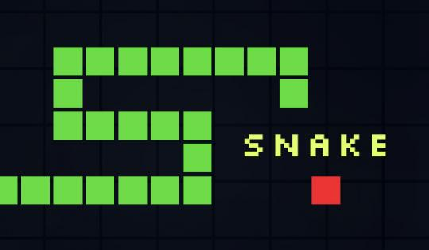
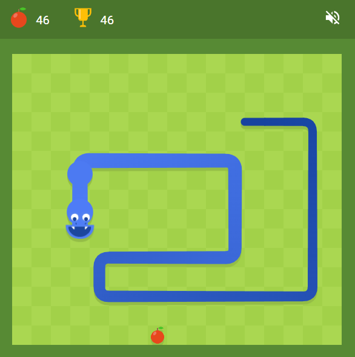

Willkommen zu meiner Präsentation!
Projekt: Snake Game in JavaFX
Was ist Snake?
Snake ist ein klassisches Arcade-Spiel, bei dem der Spieler eine Schlange steuert, die Nahrung isst und
dabei länger wird.

Technologie-Stack
- Programmiersprache: Java
- Framework: JavaFX
- IDE: IntelliJ IDEA
- Build-Tool: Maven
Features des Spiels
- Bewegliche Schlange mit wachsendem Körper
- Punkte sammeln durch das Essen von Nahrung
- Game Over bei Kollision mit der Wand oder eigenem Körper
- Anpassbares Spielfeld

Architektur und Code
Das Snake-Spiel besteht aus den folgenden Modulen:
- GameController: Steuert die Logik des Spiels
- Snake: Modelliert die Schlange und ihre Bewegung
- Food: Generiert Nahrung an zufälligen Positionen
- GameBoard: Rendered das Spielfeld
// Beispiel für den Snake-Klassenaufbau
public class Snake {
private List body;
private Direction direction;
public void move() {
// Logik für die Bewegung der Schlange
}
}
Live-Demo
Hier zeigen wir eine Demo des Spiels:
Lessons Learned
- Erstellung einer flexiblen Spielarchitektur
- Fehlerhandling und Debugging in JavaFX
- Integration von grafischen Elementen
Danke fürs Zuschauen!